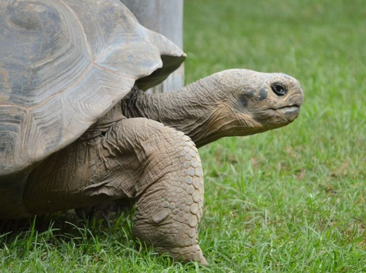

reptiles
El nombre común viene de que al iguano macho se le conoce como Tóol y a la hembra se le conoce como Bíil. Aunque en la península de Yucatán
existe una enorme variedad de reptiles son sólo tres las especies a las que se puede llamar con justicia Tolok: La principal es el Basilisco
café (Basiliscus vittatus), la lagartija verde (Laemanctus longipes) y la lagartija verde de casco o Ya’axtolok (Laemanctus serratus).
Tradicionalmente hay otras especies a las que se les llama “Tolok” como la iguana rayada o iguana negra (Ctenosaura similis) y la iguana de
cola espinosa, (Ctenosaura defensor). La iguana rayada es una especie protegida ya que en varios estados del país sirve como alimento; En
Yucatán se ha ido abandonando esta costumbre y con ello ha aumentado su población.
CARACTERISTICAS
- El reptil está habituado a la vida en la tierra, aunque algunos viven el agua.
- Son ovíparos.
- Su sangre es fría, por eso requieren exponerse al sol o estar en el agua para conservar su temperatura.
- No tienen poros en la piel por lo que no sudan.
- La mayoría son carnívoros pero también hay hervíboros.
MENÚ
Los camaleones son una familia, Chamaeleonidae, de pequeños saurópsidos (reptiles) escamosos. Existen cerca de 161 especies de camaleones, la mayor parte de ellas en África al sur del Sáhara. En América se llama a menudo camaleones a lagartos de la familia de los anoles, que no guardan ningún parentesco especial con los verdaderos camaleones.
Son famosos por su habilidad de cambiar de color según las circunstancias, por su lengua rápida y alargada, y por sus ojos, que pueden ser movidos independientemente el uno del otro.
El grupo es bastante antiguo, ya que se conocen fósiles de camaleón procedentes del Paleoceno. La familia está emparentada con la de los agámidos.
CARACTERISTICAS
- Tienen la mejor vista de los reptiles
- Casi la mitad de los camaleones viven en la isla de Madagascar
- Son capaces de ver luz ultravioleta
- Pueden cambiar de color
- Tienen una lengua extremadamente larga
MENÚ

Crocodylidae es una familia de saurópsidos, arcosaurios comúnmente conocidos como cocodrilos. Incluye a catorce especies actuales. Se trata de grandes reptiles semiacuáticos que viven en las regiones tropicales de África, Asia, América y Australia. Aparecieron por primera vez durante el Eoceno, hace unos cincuenta y cinco millones de años.Los cocodrilos pasan la mayor parte de sus vidas en el agua, bien en ríos o bien en manglares en playas de agua salada, y pueden pasar de un hábitat a otro según sus necesidades.
En sentido estricto, un cocodrilo es cualquier especie que pertenece a la familia Crocodylidae (a veces clasificada como la subfamilia Crocodylinae). No obstante, el término también se puede usar de manera más flexible para incluir todos los miembros existentes de la orden Crocodilia, es decir, los verdaderos cocodrilos, los aligatores y caimanes (familia Alligatoridae) y los gaviales (familia Gavialidae), así como los Crocodylomorpha, que incluye parientes y antepasados extintos de los cocodrilos actuales.
CARACTERISTICAS
- Pueden llegar a pesar hasta 800 kg y 6 metros de largo.
- Poseen una piel muy gruesa y rugosa
- Han sido colocados estos reptiles como en peligro de extinción
- Los cocodrilos tienen una gran sensibilidad
- Deben regular su temperatura mediante su posición respecto del sol o mediante la apertura o cierre de sus grandes mandíbulas.
MENÚ
La anaconda verde o común (Eunectes murinus) es una especie de serpiente constrictora de la familia de las boas (Boidae). Es endémica de los ríos del trópico de Sudamérica. De todas las serpientes esta es la de mayor longitud; se la hace rivalizar con la pitón reticulada (Malayopython reticulatus) por el título de la serpiente más grande del mundo, que suele ser más voluminosa, pero menos larga. Se conocen casos de humanos adultos atacados, aunque ninguna serpiente (Malayopython reticulatus como excepción) tiende a atacar a un ser humano, salvo por defensa propia, ya que estos no forman parte de su cadena trófica.La anaconda es originaria de los ríos del trópico de Sudamérica y podemos encontrarla en la selva tropical, en los pantanos y sabanas.
En Venezuela se distribuye por los llanos y las orillas del río Orinoco. También se encuentra en el Amazonas, Paraguay, Trinidad, Colombia, Brasil, Perú y Bolivia.
CARACTERISTICAS
- Pueden crecer hasta 10 metros de longitud.
- Su coloración por lo general es un verde oscuro
- En su vientre tiene con color blancuzco y al final de su cola muestra algunos diseños entre los colores amarillo y negro
- Tiene una cabeza un poco achatada y muy fuerte con dos ojos de tamaño pequeño con pupila elíptica.
- Su hocico se encuentra recubierto por un número específico de escamas engrosadas, en total son 6, tendrá 3 a cada lado.
MENÚ

Son animales endémicos de Ecuador, específicamente de las Islas Galápagos. Viven en zonas secas, áridas y en zonas altas de las islas.
La tortuga gigante de galápagos es la tortuga terrestre más grande del mundo; de metabolismo lento como todo reptil, su digestión demora de 1 a 3 semanas, tiene la capacidad de almacenar agua y pasar grandes periodos de tiempo sin ingerir líquidos, gracias a su metabolismo lento y a la capacidad de transformar su grasa acumulada en agua.
CARACTERISTICAS
- Llegan alcanzar hasta 400 Kg de peso y 2 m de longitud
- Es uno de los animales más longevos que se conocen, con una media de edad que supera los 150 años.
- Las tortugas gigantes son vegetarianas, se alimentan de cactus, hierbas, hojas y bayas.
- Pueden sobrevivir durante meses sin agua ni alimento.
- Al amanecer va en la busca de los rayos del sol para elevar la temperatura corporal.
MENÚ